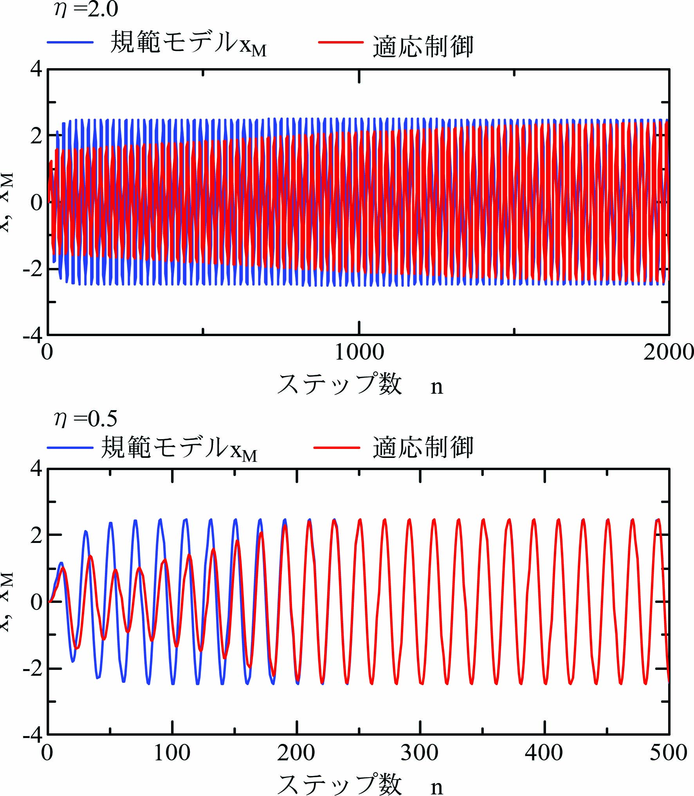
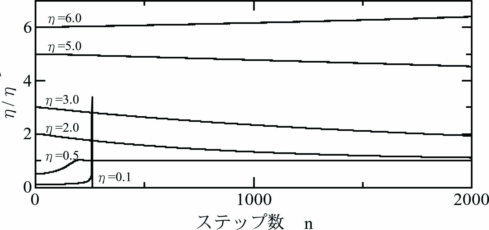

超安定論によるモデル規範適応制御 を数値解析で確認します。
\begin{align} \ddot x + \eta K_D \dot x + \eta K_P(x - u) = 0 \label{eq:SysEqn} \end{align}ここに、\(x\)は位置、\(K_D\)は微分ゲイン、\(K_P\)は比例ゲイン、\(u\)は位置入力、\(\eta(>0)\)は駆動効率係数です。
微分ゲイン\(K_D\)と比例ゲイン\(K_P\)を次式で調整します。
\begin{align} K_D = \frac{a}{\hat\eta},~~~~K_P = \frac{b}{\hat\eta}. \label{eq:ModEta} \end{align}ここに、\(\hat\eta\)は駆動効率\(\eta\)の推定値です。
目的とする制御性能を規範モデルとして次式で与えます。
\begin{align} \ddot x_M + a\dot x_M + b(x_M - u)= 0 \label{eq:MdlEqn} \end{align}ここに、\(x_M\)は規範モデルの位置です。\(a=25.12\)、\(b=3943\)とします。
式\eqref{eq:SysEqn}の\(\hat\eta\)を超安定論によるモデル規範適応制御 で導出した適応制御則に従って調整します。
適応制御則：
\begin{align} \dot{\hat{\eta}} = \alpha \frac{\{a \dot x + b (x - u)\}\varepsilon}{\hat\eta}\label{eq:AdaptRule} \end{align} \begin{align} \varepsilon = e + c\dot e,~~~e = x_M - x. \label{eq:ExdEqn} \end{align}強正実条件を満たすように\(c=2/25.12\)とします。
\(\eta/\hat\eta\)の動作をオイラー法による逐次数値積分 による数値シミュレーションで観察します。
オイラー法の時間刻み\(\varDelta t = 0.0001\)[s]として計算します。\(x_0(n)=x(n)\)として
\begin{align} \left. \begin{array}{@{\,}rl} \ddot x_k(n)&=~ -\eta K_D \dot x_k(n) - \eta K_P\{x_k(n) - u(n)\},\\ \dot x_{k+1}(n)&=~ \dot x_k(n)+\ddot x_k(n)\varDelta t,\\ x_{k+1}(n)&=~ x_k(n) + \dot x_k(n)\varDelta t + \frac{1}{2}\ddot x_k(n)\varDelta t^2. \end{array} \label{eq:Euler} \right\} \end{align}規範モデル\eqref{eq:MdlEqn}はサンプル時間\(T=0.005\)[s]として、離散時間状態方程式 で計算します。
\begin{align} \left[ \begin{array}{@{\,}l} x_M(n+1)\\ \dot x_M(n+1) \end{array} \right] = \left[ \begin{array}{@{\,}cc} 0.9531&0.004222\\ -18.23&0.8370 \end{array} \right] \left[ \begin{array}{@{\,}l} x_M(n)\\ \dot x_M(n) \end{array} \right] + \left[ \begin{array}{@{\,}c} -0.04691\\ 18.23 \end{array} \right]u(n) \label{eq:StateEq} \end{align}規範モデルの離散時間状態方程式\eqref{eq:StateEq}を１回実行する間にオイラー法\eqref{eq:Euler}を\(T/\varDelta t=50\)回(\(k=0\cdots 49\))実行します。
\(\dot{\hat\eta}(n)=\{\hat\eta(n)-\hat\eta(n-1)\}/T\)と近似して適応制御則\eqref{eq:AdaptRule}を次式とします。
\begin{align} \left. \begin{array}{@{\,}rl} \hat\eta(n+1)&=~\hat\eta(n)-\alpha T\frac{v_{FB}(n)\varepsilon(n)}{\hat\eta(n)}\\ v_{FB}(n)&=~-a \dot x(n) - b \{x(n) - u(n)\}\\ \varepsilon(n) &=~ e(n) + c\dot e(n)\\ e(n)&=~ x_M(n) - x(n) \end{array} \label{eq:AdaptRuleDgt} \right\} \end{align}数値実験では式\eqref{eq:Euler}～\eqref{eq:AdaptRuleDgt}を１ステップとします。
初期値\(\hat{\eta} = 1\)、\(\alpha = 1.0\times 10^{-5}\)として、 \(\eta = 2.0\)と\(\eta = 0.5\)の場合について 規範モデル\(x_M\)に対する適応制御系\(x\)の挙動を数値実験により観察します。
\(\eta = 2.0\)の場合、2000ステップで適応制御系\(x\)が規範モデル\(x_M\)に一致しています。
\(\eta = 0.5\)の場合、250ステップで適応制御系\(x\)が規範モデル\(x_M\)に一致しています。
\(\eta = 0.1,0.5,2.0,3.0.5.0,6.0\)の場合について\(\eta/\hat{\eta}\)の挙動を観察します。 \(\eta/\hat{\eta}=1\)に収束すれば\(\hat{\eta} = \eta\)となり、 適応制御成功です。
\(\eta = 0.5\)の場合は、250ステップほどで\(\eta/\hat{\eta}=1\)に収束しています。
\(\eta = 2.0\)の場合は、2000ステップでほぼ\(\eta/\hat{\eta}=1\)に収束しています。
\(\eta = 3.0,5.0\)の場合は、2000ステップでまだ\(\eta/\hat{\eta}=1\)に収束していませんが、 収束していくことを確認できます。
\(\eta = 6.0\)の場合は、収束せずに発散しています。
\(\eta = 0.1\)の場合は、適応に失敗しています。
この数値実験では、\(\eta/\hat{\eta} < 1\)の場合の方が\(\eta/\hat{\eta} > 1\)の場合よりも 早く\(\eta/\hat{\eta}=1\)に収束することが確認できます。 しかし、\(\eta/\hat{\eta} > 1\)の場合の方が安定して\(\eta/\hat{\eta}=1\)に収束することが窺えます。